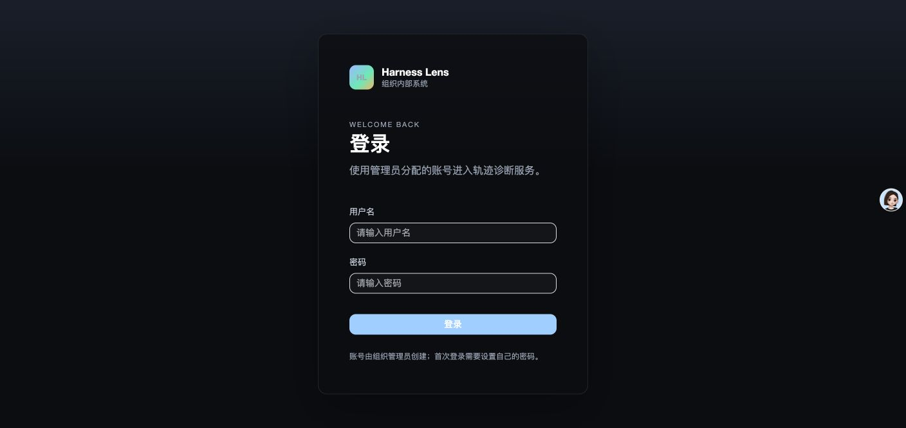
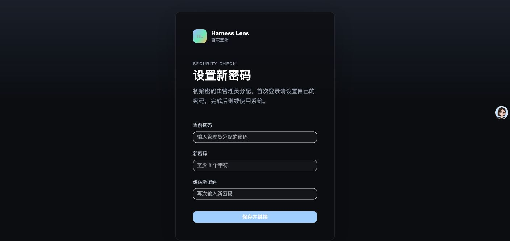
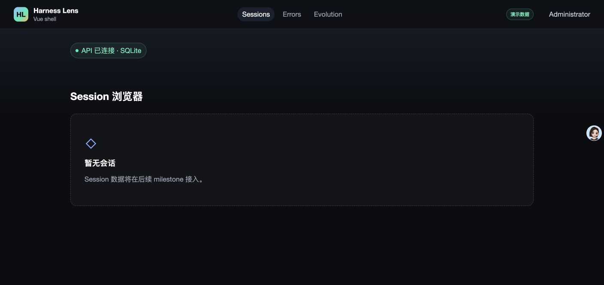
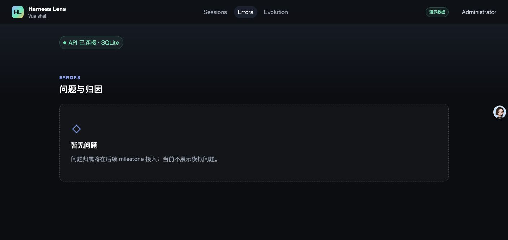
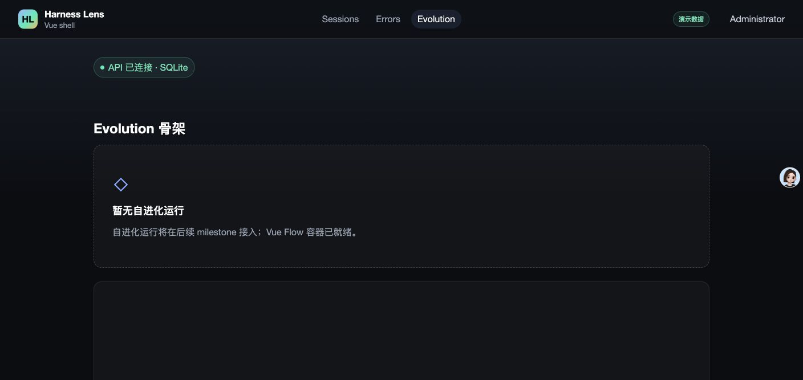
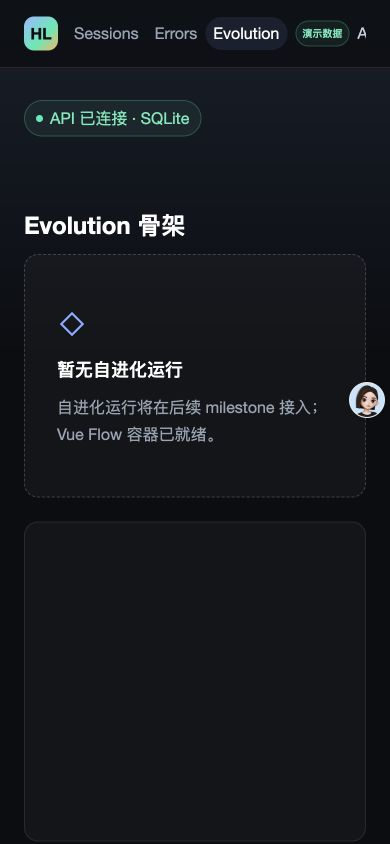

- Issue
- #35 · M2 JSONL normalizer
- PR
- #87
- Commit
- 7f3d937
- Runtime
- FastAPI + Vite + Chrome + SQLite
- Data scope
- aggregate-only local verification; no transcript text persisted in report
Harness Evolution · PR #87
M2-03 JSONL 归一化器集成冒烟报告
在真实本地 payload、临时 SQLite、FastAPI、Vite 与 Chrome 上验证 JSONL 归一化、坏行隔离、隐私边界和全局壳。所有场景通过，未发现集成缺陷。
11冒烟场景
11通过
0控制台告警/错误
19聚焦测试通过
Environment and Artifact
2026-10-25 · macOS · Chrome · FastAPI · SQLiteScenario Matrix
11 pass| # | 场景 | 结果 | 观测 | 证据 |
|---|---|---|---|---|
| 01 | 真实本地聚合 | PASS | 4 roots、66 agents、15,507 lines、2,755 messages、9,743,423 tokens、3,536 tools、97 errors、53 user turns；所有 root 均有模型和用户轮次。 | normalizer-evidence.json · localAggregate pnpm data:normalize:sessions |
| 02 | Fixture golden oracle | PASS | 4 roots、8 agents、3,605 bytes；manifest 与 payload 派生统计一致。 | normalizer-evidence.json · fixturesCheck pnpm fixtures:check |
| 03 | 坏行隔离 | PASS | 标量 JSON 与畸形 JSONL 分别生成 INVALID_TRANSCRIPT_RECORD、INVALID_JSONL_LINE，后续有效行继续统计。 | normalizer-evidence.json · syntheticRegression.issueCodes |
| 04 | 累计 usage 去重 | PASS | 重复 assistant message.id 只计一次，并采用最终累计 usage；合成样本 tokens=28。 | normalizer-evidence.json · syntheticRegression.tokensTotal |
| 05 | 用户轮次筛选 | PASS | 仅 attachment 记录的 human origin 生成轮次；queue-operation、meta、peer 与 tool-result 不生成轮次。 | normalizer-evidence.json · syntheticRegression.userTurnCount focused tests 19/19 |
| 06 | 事件与模型选择 | PASS | Skill/Agent/Workflow 事件按源顺序、lineNo/messageOffset 记录；多模型最高频且首见破平。 | normalizer-evidence.json · syntheticRegression.eventKinds focused tests 19/19 |
| 07 | 隐私与 agent_meta | PASS | message/thinking/tool-result 文本不进入持久化结果；原始 agent_meta 以冻结副本保留。 | normalizer-evidence.json · syntheticRegression.toolResultTextPersisted |
| 08 | sync_runs.errors 脱敏 | PASS | 临时 SQLite 中只写入稳定 code、位置与脱敏消息；私有记录文本未落库。 | normalizer-evidence.json · syncErrorAdapter |
| 09 | 真实 Chrome 壳 | PASS | 登录、强制改密、Sessions/Errors/Evolution、demo 角标和用户菜单正常；console warning/error=0。 | screenshots/03-sessions.png screenshots/04-errors.png screenshots/05-evolution.png |
| 10 | 390×844 响应式 | PASS | Computer Use 视口为 390×844，scrollWidth=clientWidth=390，用户菜单右边界 366。 | screenshots/06-narrow-390.png browser-evidence.json · narrowViewport |
| 11 | 自动化边界 | PASS | 真实 Chrome E2E 4/4；m2-03 仅验证纯 parser 与脱敏 issue 适配，树组装和业务表重写留待 m2-04/m2-05。 | browser-evidence.json · e2e pnpm test:e2e -- m1-shell |
Issues and Observations
No defects foundNo defects were found.
Evidence
6 screenshots





Automated Coverage Assessment
5 areas reviewed| 区域 | 覆盖 | 结论 | 建议 |
|---|---|---|---|
| 纯 JSONL parser | 19 个聚焦测试 + 合成 mixed transcript | 统计、用户轮次、trigger、模型与隐私边界有确定性证据。 | 保持 golden oracle 与 parser version 同步。 |
| 真实本地数据 | 只读聚合命令 + Computer Use | 4/66/15,507 与修正后的 token 总量一致，所有 root 可产出模型和轮次。 | 后续树组装继续使用同一真实数据做聚合验收。 |
| 坏行与 sync errors | 临时 SQLite 真实写入 | 稳定错误码可持久化，原始行和私有文本不落库。 | m2-05 重放时继续复用该脱敏适配器。 |
| 浏览器壳和响应式 | Computer Use + 真实 Chrome E2E | 登录、强制改密、导航、控制台和 390px 均正常。 | 会话列表 UI 接入后扩充领域页面冒烟。 |
| 树组装与业务重写 | 不在 m2-03 范围 | m2-03 不写 session/agent/event 业务表，也不标记 processed。 | 由 m2-04/m2-05 分别覆盖。 |
Conclusion
通过当前提交的 JSONL 归一化器与真实本地 payload、SQLite 错误适配和现有 Chrome 壳协同正常，未发现集成缺陷。
- 真实聚合保持 4 roots、66 agents、15,507 lines 和修正后的 9,743,423 tokens。
- 坏行与非对象行均隔离为脱敏 issue，后续有效记录继续解析。
- 浏览器控制台无 warning/error，390×844 无横向溢出。
- 敏感轨迹正文、thinking 和 tool-result 文本未进入报告或持久化错误。
证据源：Computer Use 截图、脱敏聚合/HTTP/DB 证据、真实 Chrome E2E 与聚焦自动测试。生成 HTML 不应手改。